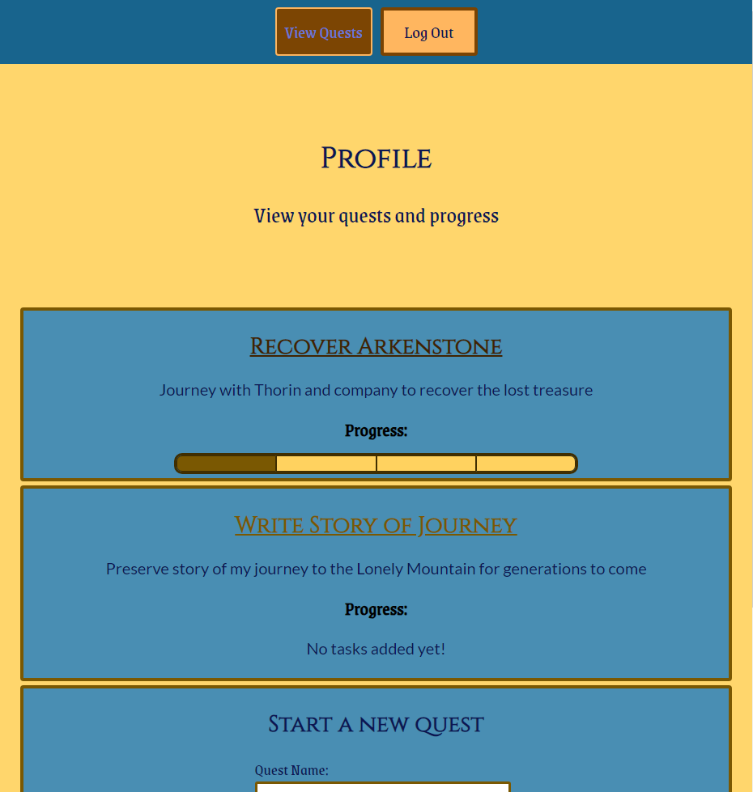
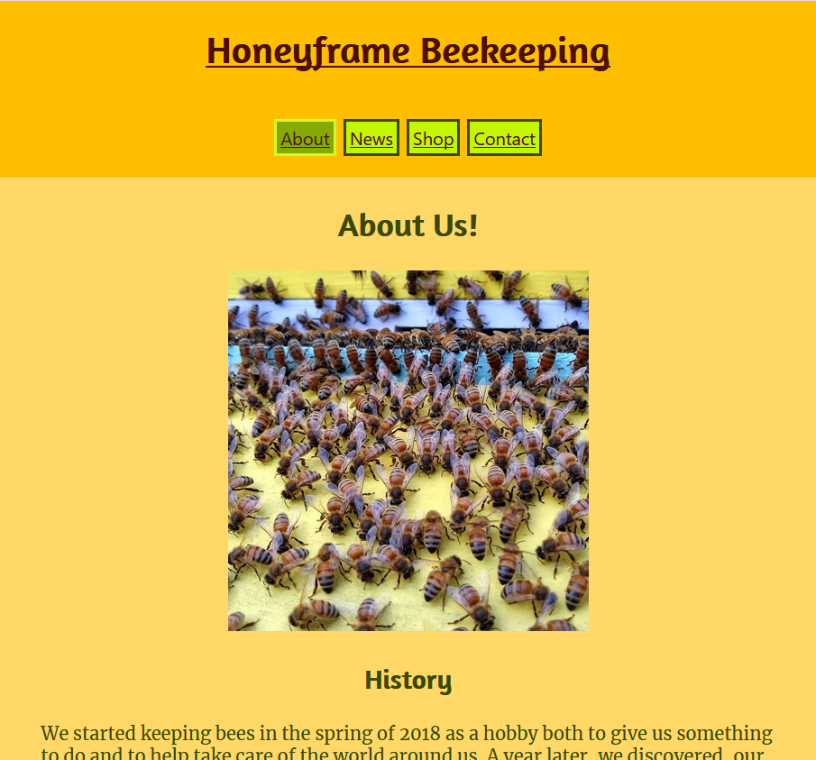
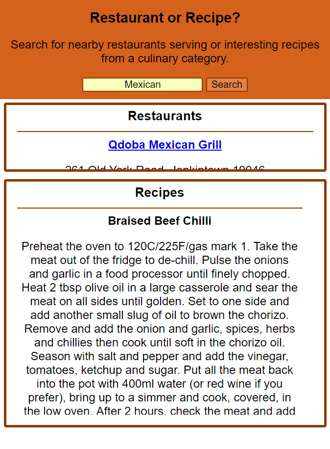

-
Questify
A productivity app built with React, Node.JS, Express, PostgreSQL, HTML, and CSS that lets users transform mundane to-do lists into quests similar to what one would find in an RPG, then track their progress as they complete tasks for each of their quests
Live Client Repo API Repo -
Honeyframe
A mock storefront built with React, Node.JS, Express, PostgreSQL, HTML, and CSS that functions as both a shop and a blog for a fictionalized small beekeeping business. The skeleton of the app can be reused and built upon for other small businesses seeking a similar combination of store and blog
Live Client Repo API Repo -
Restaurant or Recipe?
A meal-finding app built using HTML, CSS, JavaScript, and jQuery as well as the Zomato API for restaurant data and the TheMealDB API for recipes that asks the user for a type of food, then provides related recipes and nearby restaurants
Live Repo -
Eagles Quiz App

A short quiz built with HTML, CSS, JavaScript, and jQuery testing the user’s knowledge of the 2017 Eagles season with ten multiple-choice questions
Live Repo